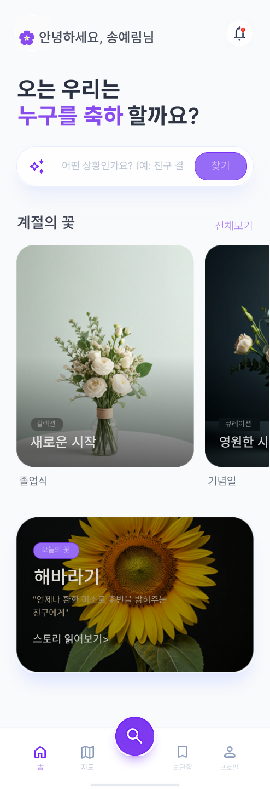
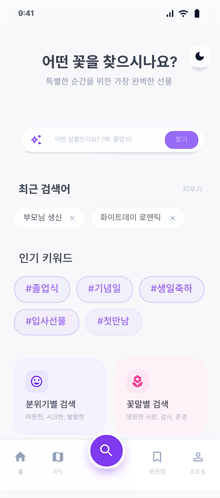
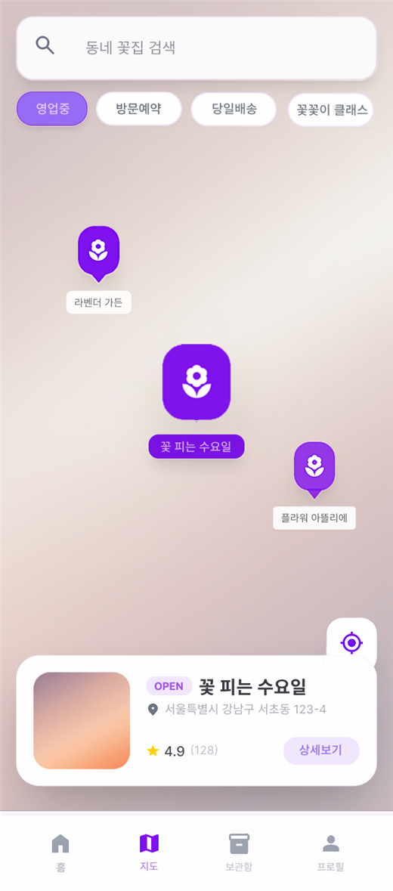
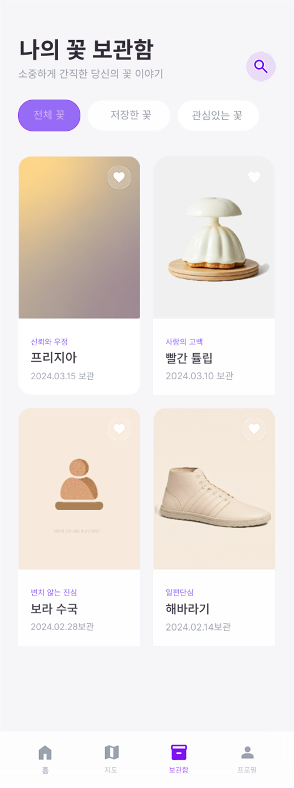

요구사항을 구조화하고 필요한 기능을 끝까지 구현해 결과로 연결하는 개발자입니다.
JWT 인증, 역할 기반 접근 제어, 주문·결제·정산 흐름, 운영 조회 기능 구현 경험이 있으며 React와 Flutter 프로젝트를 함께 다루며 화면과 서버 구조가 유기적으로 맞물리는 지점을 이해해왔습니다.
01
흐름이 있는 서비스를 구조화하고 끝까지 구현하는 일을 좋아합니다.
요구사항을 구조화하고 필요한 기능을 끝까지 구현해 결과로 연결하는 개발자입니다.
JWT 인증, 역할 기반 접근 제어, 주문·결제·정산 흐름, 운영 조회 기능 구현 경험이 있으며 React와 Flutter 프로젝트를 함께 다루며 화면과 서버 구조가 유기적으로 맞물리는 지점을 이해해왔습니다.
02
어떤 비즈니스 흐름을 다뤘고, 그 안에서 어떤 역할을 맡았는지 정리했습니다.
주문부터 배차, 운행, 결제, 정산까지 이어지는 통합 물류 운영 플랫폼 프로젝트입니다. ERD, 관리자 화면, 화주·차주 앱 자료를 함께 정리하면서 서비스 흐름을 구조적으로 다뤘습니다.
Project Materials
발표 자료에 있던 설계 문서와 주요 화면을 추려, 실제로 어떤 흐름을 다뤘는지 한눈에 보이게 정리했습니다.
요청 생성, 후보 탐색, 제안 만료, 수락 경쟁, 배차 확정 단계를 시퀀스로 분리했습니다.
차주 승인·반려, 정산 승인·보류, 신고 접수·제재 처리 흐름을 관리자 기능 단위로 정리했습니다.
화주 앱, 차주 앱, 관리자 웹이 어떤 상태를 공유하는지 화면 자료 기준으로 맞춰봤습니다.
Minecraft 관찰/모니터링 플랫폼으로, JWT 인증과 스냅샷/로그 수집 API, 플레이어 조회 기능을 구현했습니다.
AI 기반 꽃 추천과 주변 꽃집 검색을 결합한 모바일 앱입니다. 홈, 검색, 지도, 보관함 흐름을 중심으로 사용자 여정을 시각적으로 정리하고 구현했습니다.
Screen Flow
프로젝트 2 자료에서 핵심 모바일 화면만 추려, 플로릿이 어떤 경험을 만들려 했는지 바로 보이게 구성했습니다.




뉴스 OpenAPI 기반 뉴스 통합 조회 웹 서비스입니다. 비동기 데이터 처리와 상태별 UI 분리를 통해 사용자 관점의 흐름을 구현했습니다.
03
실무에서 바로 기여할 수 있는 구현 역량만 추렸습니다.
주문, 결제, 정산처럼 단계가 이어지는 흐름을 모델링하고 조건과 예외를 분리해 관리합니다.
JWT 기반 인증과 역할 기반 접근 제어를 적용해 사용자 유형별 API 흐름을 설계하고 구현합니다.
사용자 기능뿐 아니라 관리자 조회, 로그 확인, 상태 점검처럼 운영에 필요한 기능까지 함께 설계합니다.
React와 Flutter 프로젝트를 다루며 화면에서 필요한 데이터와 예외를 고려한 API를 만들 수 있습니다.
Java, Spring Boot, Spring Security, JPA, Querydsl, JWT
React, Flutter, TypeScript, JavaScript, HTML, CSS
Oracle, MySQL, Docker, Linux, Swagger, Postman, GitHub
04
기존 서비스 구조를 빠르게 이해하고, 안정적인 구현과 예외 처리 개선으로 팀에 기여하는 개발자가 되고자 합니다. 협업이나 채용 관련 문의는 아래 링크로 편하게 연락 주세요.